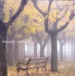

| Artist: | nosound |
| Title: | Sol29 |
| Label: | Independent nosoundcd05 |
| Length(s): | 64 minutes |
| Year(s) of release: | 2005 |
| Month of review: | [11/2005] |
| 1) | In The White Air | 6.57 |
| 2) | Wearing Lies On Your Lips | 4.20 |
| 3) | The Child's Game | 2.46 |
| 4) | The Moment She Knew | 9.39 |
| 5) | Waves Of Time | 2.07 |
| 6) | Overloaded | 6.13 |
| 7) | The Broken Parts | 6.24 |
| 8) | Idle End | 9.43 |
| 9) | Hope For The Future | 5.57 |
| 10) | Sol29 | 10.01 |
Opener In The White Air start of dreamily, only after some minutes fading in the vocals. The bridge -if it can be called such- is created by a fuzzy guitar sequence. Wearing Lies On Your Lips moves into the vocal section right away. The synths and guitar create that dreamy atmosphere once again. Surprisingly the track has what might be considered a rather normal sounding guitar solo (by pop standard). The Child's Game opens with clear piano sound, which is just a tad David Bridie. The Moment She Knew is an elongated synth and guitar duel, slowly building up speed and atmosphere. The lingering feel reminds me of Camel's Ice. Waves Of Time is an afterthought.
Overloaded returns the vocals into the game, which makes for an even dreamier sound than that in the instrumental sections. The mid section contains some heavy mellotron sounds, sliding into acoustic guitar. The Broken Parts is another vocal dreamy track, close to Overloaded stylistically, but without the strong mellotron. Idle End opens with stronger, more melodic guitar, less atmospheric. As it progresses the guitar climbs onto the back seat, leaving the driver's seat for Erra's vocals. The track ends with another melodic guitar solo, though, to float off into the distance. Hope For The Future starts as acoustic guitar with vocals, with the synths slowly gaining in strength, only to abate as the track progresses. The synth sound reminds me of water (ah, the memory of water).
The closing title track is yet another lengthy dreamy track.